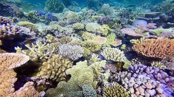

Proyecto Bioinformática
En colaboración con el programa de Dualiza de CaixaBank, hemos trabajado en un proyecto de bioinformática con el objetivo de analizar e identificar un nuevo microorganismo no identificado que convive en corales en el litoral del Mediterráneo.
Conoce nuestro proyecto¿Qué vas a conocer?

Objetivo del Proyecto
El objetivo principal del proyecto es identificar el microorganismo no identificado encontrado conviviendo en simbiosis con unos corales del litoral mediterráneo, analizando las muestras y comparándolas con las de una base de datos.
Proceso de trabajo
Para llevar a cabo el proyecto, las muestras obtenidas se sometieron a un proceso de filtrado para conseguir datos más concretos.

Dificultades y soluciones
Conoce las complicaciones que dificultaron el desarrollo del proyecto y cómo conseguimos afrontarlas y solucionarlas.
¿Qué vamos a encontrar aquí?
📋 ¿Qué es Dualiza?
Conoce un poco más sobre la entidad que nos brindó esta oportunidad y cómo surgió el proyecto.
Leer más →🔄 Procesos del Proyecto
Descubre nuestro recorrido desde el inicio, incluyendo los errores y las dificultades que encontramos durante el proyecto.
Leer más →📸 Galería del Proyecto
Explora las imágenes relacionadas con el proyecto, incluida la presentación a nuestros colaboradores.
Leer más →👥 Nuestro equipo
Conoce a las personas que hicieron posible este proyecto y sus funciones dentro del equipo.
Leer más →"Dualiza nos ha dado la oportunidad de aprender haciendo, de equivocarnos y mejorar, y sobre todo, de descubrir lo que somos capaces de lograr como equipo."
— Equipo Dualiza, Instituto Puig Castellar